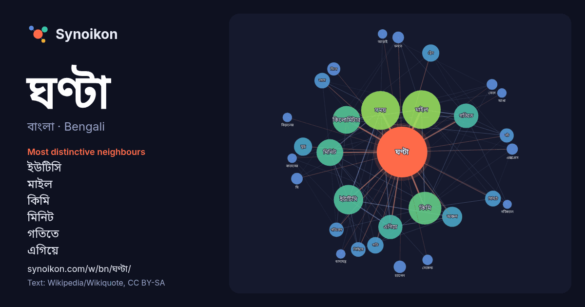

বাংলা · Bengali · word of the day list
ঘণ্টা
“bell” · The words found around it in 1115 instances from Bengali Wikipedia, Wikiquote.

Most distinctive neighbours
- ইউটিসি 84×
- মাইল 83×
- কিমি 70×
- মিনিট 55×
- গতিতে 54×
- এগিয়ে 37×
- কিলোমিটার 29×
- মিনিটে 22×
- গতিবেগ 21×
- ট্রেন 21×
- গতি 21×
- লাগে 21×
- নট 21×
- পিছিয়ে 21×
- সময় 15×
- অঞ্চল 15×
- যুদ্ধ 13×
- বেগে 13×
- চ্যানেল 12×
- দিনে 12×
× = how many times more often than in general Bengali Wikipedia text.
Most frequent neighbours
- সময় 169
- মাইল 166
- কিমি 120
- ইউটিসি 97
- কিলোমিটার 86
- মিনিট 80
- গতিতে 67
- এগিয়ে 65
- অঞ্চল 45
- যুদ্ধ 37
- ট্রেন 33
- তিন 32
- গতি 30
- মিনিটে 28
- লাগে 27
- সর্বোচ্চ 26
- পিছিয়ে 24
- গতিবেগ 23
- নট 22
- সময়ের 20
In context
- ঘণ্টা বলতে বোঝাতে পারে: ঘণ্টা (বাদ্যযন্ত্র), একধরনের বাদ্যযন্ত্র ঘণ্টা (সময়), সময়ের এককবিশেষ এটি একটি দ্ব্যর্থতা নিরসনকারী পাতা। এই পাতার শিরোনামের সাথে Wikipedia snippets · ঘণ্টা
- জি ২৪ ঘণ্টা(পূর্ব নাম:- ২৪ ঘণ্টা) একটি জনপ্রিয় ২৪x৭ বাংলা সংবাদ চ্যানেল। এই চ্যানেলের মালিক জি এন্টারটেইনমেন্ট এন্টারপ্রাইজের জি নিউজ লিমিটেড শাখার জি Wikipedia snippets · জি ২৪ ঘণ্টা
- ঘণ্টা সময়ের একক। ৬০ মিনিটে ১ ঘণ্টা, এবং এক দিনে ২৪ ঘণ্টা। মিনিট সেকেন্ড উইকিমিডিয়া কমন্সে ঘণ্টা (সময়) সংক্রান্ত মিডিয়া রয়েছে। বিশ্বের সময় অঞ্চল Wikipedia snippets · ঘণ্টা (সময়)
- সংস্কৃত শব্দ থেকে এসেছে। ঘণ্টা বাজানো শুভ ধ্বনি হিসেবে বিবেচিত হয়। সাধারণত হিন্দু মন্দিরগুলোর প্রবেশদ্বারে একটি বড় ধাতব ঘণ্টা ঝুলানো থাকে এবং মন্দিরে Wikipedia snippets · ঘণ্টা (হিন্দুধর্ম)
- কিলোওয়াট ঘণ্টা শক্তির একটি একক (প্রতীক : kWh, kW·h, or kW h ) যা ১০০০ ওয়াট-ঘণ্টা, বা ৩.৬ মেগাজুলের সমান। যদি শক্তি একটি নির্দিষ্ট সময় ধরে নির্দিষ্ট Wikipedia snippets · কিলোওয়াট ঘণ্টা
- বিড়ালের ঘণ্টা হলো একটি ঘণ্টা যা বিড়ালের কলারে লাগানো থাকে যাতে বিড়াল স্থানীয় বন্যপ্রাণীর ক্ষতি করতে না পারে। ঘণ্টাটি সম্ভাব্য শিকারকে বিড়ালের আগমন Wikipedia snippets · বিড়ালের ঘণ্টা
- দুপুরে খাবারের জন্যে ঘণ্টা বেজে উঠল আর তখনই একজন বৃদ্ধ “আব্বাস” (রাজ্জাক) চিৎকার করে বলতে থাকে- "আমি কতো বার বলেছি তোমরা এই ঘণ্টা বাজাইও না, আমি এই ঘণ্টার Wikipedia snippets · ছুটির ঘণ্টা
- জাহাজ ঘণ্টা একটি জাহাজের উপরের সময় নির্দেশ করতে এবং নাবিকদের দায়িত্ব বণ্টন ও নিয়ন্ত্রণ করতে ব্যবহৃত হয়। ঘণ্টাটি সাধারণত পিতল বা ব্রোঞ্জ দিয়ে তৈরি Wikipedia snippets · জাহাজ ঘণ্টা
More Bengali words
- অরণ্য
- আয়না
- ইতিহাস
- ঈশ্বর
- কাজ
- কুকুর
- ক্ষমতা
- খাদ্য
- গান
- গ্রীষ্ম
- ঘড়ি
- ঘোড়া
- ছায়া
- জননী
- জলবায়ু
- জীবন
- ঝড়
- টাকা
- ট্রেন
- দারুচিনি
- দ্বীপ
- নক্ষত্র
- নীরবতা
- পরিবার
- পানি
- পাহাড়
- প্রকৃতি
- বাগান
- বিজ্ঞান
- বিড়াল
- বৃষ্টি
- ভাষা
- মধু
- মরুভূমি
- মানচিত্র
- মৃত্যু
- রাস্তা
- রুটি
- লবণ
- শরৎ
- শহর
- শিল্প
- শীত
- সত্য
- সময়
- সেতু
- সোনা
- স্বাস্থ্য
- হৃদয়
Precomputed on 2026-10-09 with default settings (±5 words, medium corpus). The interactive map can refresh it with live data.